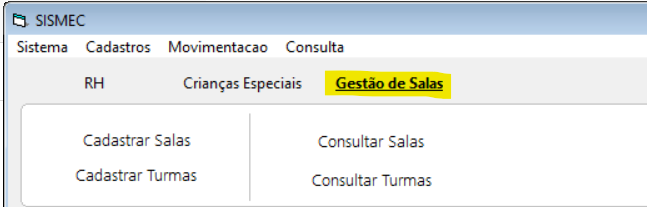
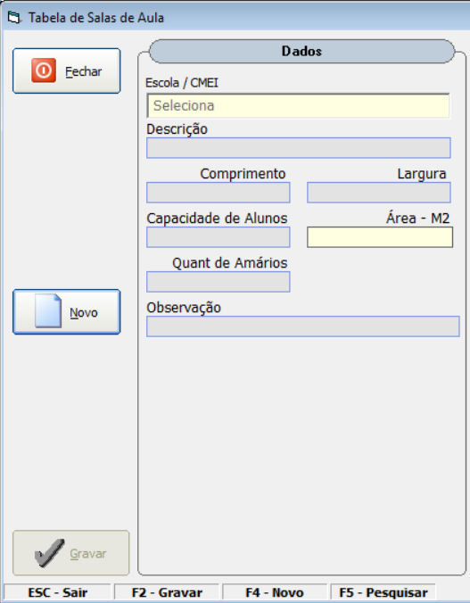
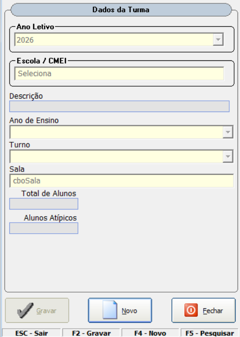
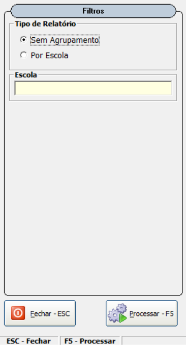
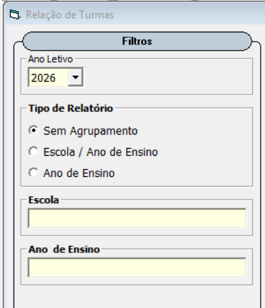

Gestão de Salas – Visão Geral
Finalidade:
Esta funcionalidade permite cadastrar salas físicas, registrar suas dimensões, capacidade e controlar a alocação de turmas, garantindo que não haja conflitos de uso.
Principais Funcionalidades:
- Cadastro de salas com cálculo automático da área.
- Cadastro de turmas vinculadas a uma sala.
- Bloqueio automático para evitar duas turmas na mesma sala.
- Relatórios de salas e turmas cadastradas.
Quando utilizar:
Sempre que for necessário cadastrar novas salas, registrar turmas ou consultar a ocupação atual dos espaços.

Acesso
Função da Tela:
Navegar entre os formulários do controle de gestão de salas. Clique nas opções para acessar o formulário.
Opções:
- Cadastrar Salas. Acesso ao formulário para cadastro e manuteção das salas.
- Cadastrar Turmas. Acesso ao formulário para cadastro e manuteção das turmas
- Consulta Salas. Relatório das Salas.
- Consulta Turmas. Relatório das Turmas.

Cadastro de Salas
Função da Tela:
Permite registrar as salas disponíveis na escola, informando suas dimensões e capacidade.
Descrição dos Campos:
- Descrição: Nome ou identificação da sala (ex.: Sala 01, Laboratório, Auditório).
- Comprimento: Medida em metros.
- Largura: Medida em metros.
- Área: Calculada automaticamente pelo sistema (Comprimento × Largura).
- Quant de Armários: Quantidade de armários que constam na sala.
- Capacidade: Quantidade máxima de alunos que a sala comporta.
Regras Importantes:
- A área é calculada automaticamente e não pode ser alterada manualmente.
- Todos os campos são obrigatórios.
- A capacidade deve ser um número inteiro maior que zero.

Cadastro de Turmas
Função da Tela:
Permite cadastrar turmas e vinculá-las a uma sala específica.
Descrição dos Campos:
- Descrição: Nome identificador da turma(ex.: 1o Ano A, Pre 5 B).
- Ano de Ensino: Selecione o ano de ensino correspondente.
- Turno: Manhã, Tarde ou Integrral
- Sala: Selecione a sala onde a turma esta alocada. ENTER para pesqusar sala livres.
- Total de Alunos: Número de alunos total da turma.
- Alunos Atípicos com Laudo: Número de alunos especiais da turma (com laudo).
Regras do Sistema:
- O sistema não permite cadastramento de duas turmas na mesma sala e turno.
- O sistema alertar caso a quantidade de alunos ultrapasse a capacidade da sala.
- Todos os campos são obrigatórios.

Relatório de Salas
Função do Relatório:
Exibe todas as salas cadastradas, com suas dimensões, área e capacidade.
Informações exibidas:
- Descrição da sala
- Comprimento e largura
- Área total
- Capacidade máxima
Este relatório é utilizado para conferência e planejamento da ocupação dos espaços.

Relatório de Turmas
Função do Relatório:
Lista todas as turmas cadastradas, suas salas e quantidade de alunos.
Informações exibidas:
- Descrição da turma
- Ano de ensino
- Turno
- Sala alocada
- Quantidade de alunos
Este relatório auxilia na verificação da ocupação das salas e na organização geral da escola.